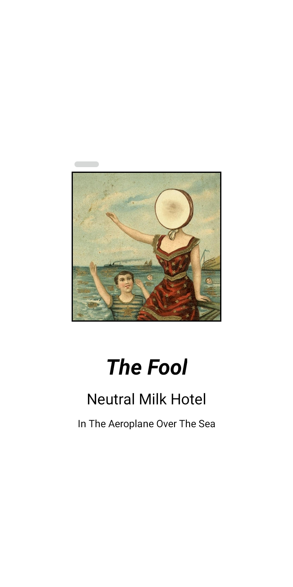
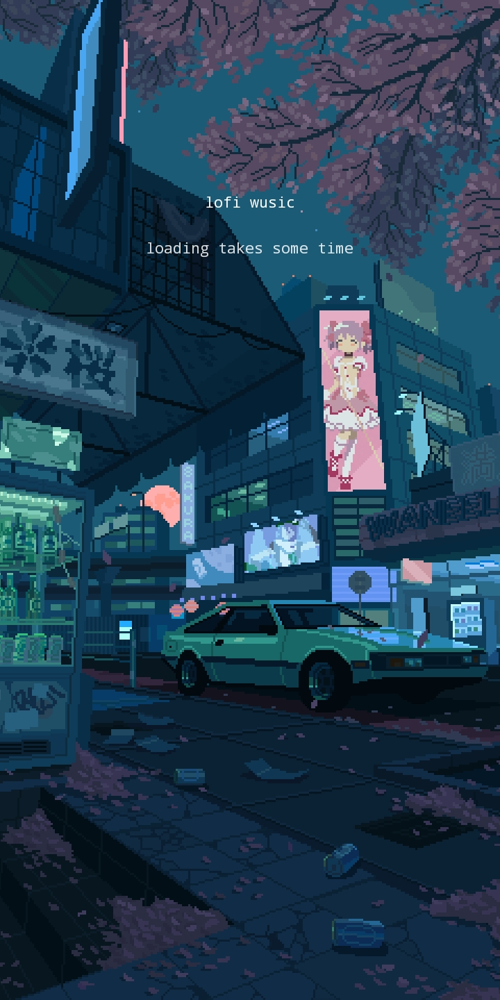
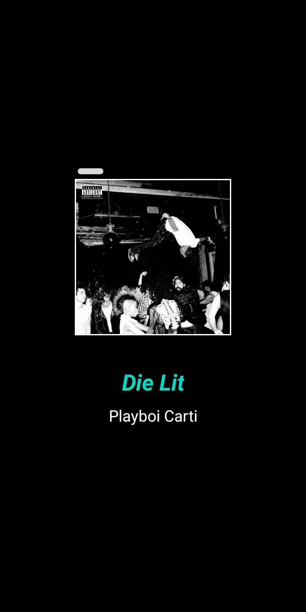

wusic - Music Player for Working/Studying
Wusic is a music player designed for listening to music while working/studying, alongside looking visually pleasing. It by default plays offline songs stored in your device, and sorts them according to your choice. It also includes an option to play lofi-music. Includes a dark-mode switch on-the-fly.
The design of this app has been made to fit something that I observed me complaining about in music players plus some other stuff that I felt distracts me usually.
The main philosophy is as below:
1. Having a lot of albums and seeing them in a list always makes me spend a lot of time in deciding which one to listen to (and I end up listening to Kanye), so instead I chose to not have one list to view all the albums but instead a swipe-like function where I give enough thought to each album as I scroll through them, and hence eliminating overchoice. Plus, it looks good.2. When viewing the 'slides' of each song/album, you have to long press to play a song as opposed to just tap, making it a little harder so that frequent swipe/play is discouraged and hence, making it less distracting/eliminating choice overload.
3. Switching between dark-mode and light-mode is as easy as pressing one switch so as to make it efficient, as opposed to navigating through 3 menus to change one setting. Similarly, with full-screen mode. Also, looks very cool.
4. Minimal UI buttons with a similar aesthetic throughout to again make it more immersive while also being less distracting.


